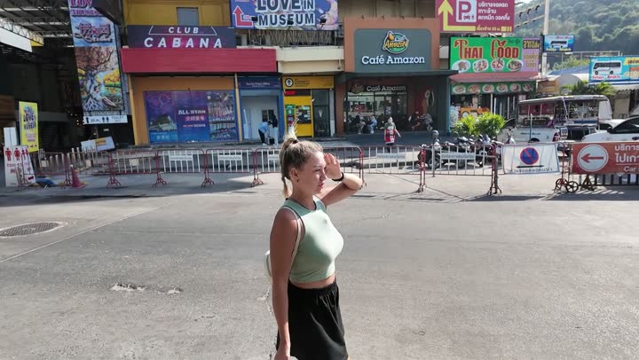
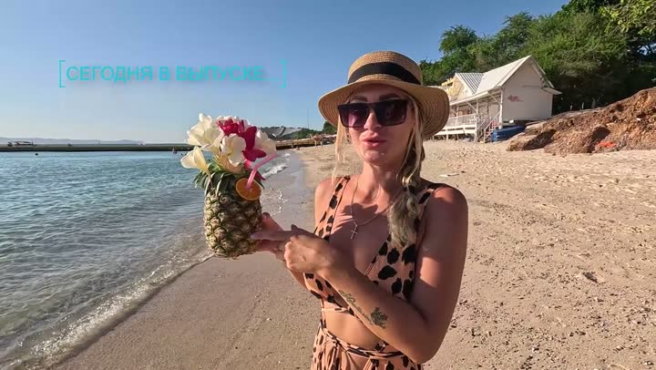
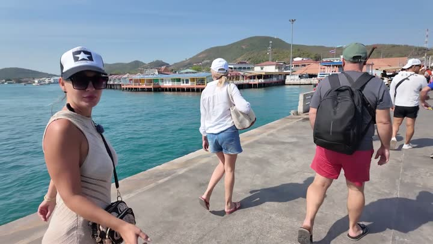
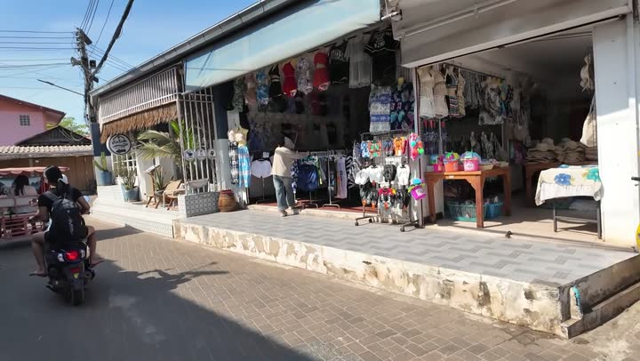
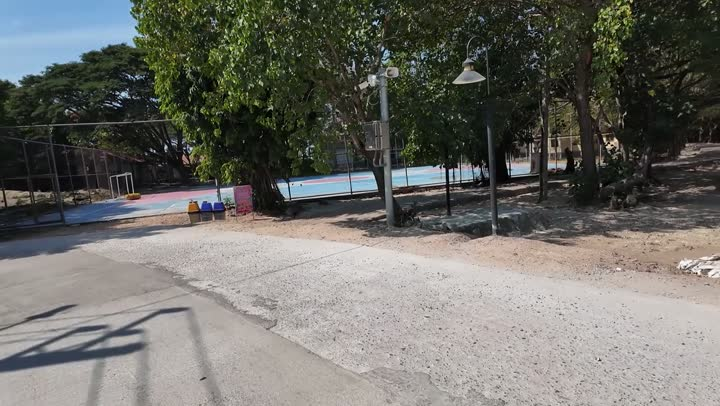
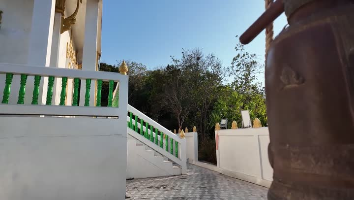
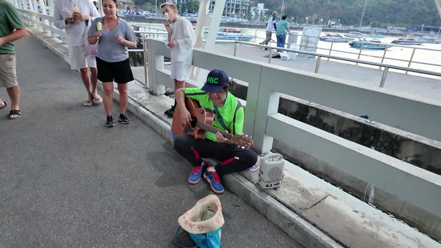

Атлас мест · ролик от 19 апреля 2025
остров Ко Лан | исследуем новые места | ужин в кафе CHICHA | ПАТТАЙЯ
Места из этого ролика — 10
- Кафе Chicha — с 0:00, Паттайя ▶
- Пирс Бали Хай — с 0:33, Паттайя ▶
- Остров Ко Лан — с 2:35, Паттая ▶
- Супермаркет Seven Eleven (Севен) — с 3:06, Паттайя ▶
- Лента — с 4:39, Паттайя ▶
- Ашан — с 4:39, Паттайя ▶
- Пляж Саммер — с 6:10, Паттайя ▶
- Пляж Джомтьен — с 11:46, Паттайя ▶
- Смотровая на Ко Лане — с 20:42, Паттайя и окрестности ▶
- Кафе Чича — с 24:32, Паттайя ▶
Кафе Chichaкафе · 🤔 На любителя Лентасупермаркет · 🤔 На любителя
Лентасупермаркет · 🤔 На любителя Пляж Джомтьенпляж · 👍 Советуем · средне
Пляж Джомтьенпляж · 👍 Советуем · средне

Пирс Бали Хайпирс и паром · 👍 Советуем · дёшево
Остров Ко Ланостров · 👍 Советуем · дёшево
Супермаркет Seven Eleven (Севен)супермаркет · 👍 Советуем · дёшевоЛентасупермаркет · 🤔 На любителя
Ашансупермаркет · 🤔 На любителя · средне
Пляж Саммерпляж · 👍 Советуем · среднеПляж Джомтьенпляж · 👍 Советуем · средне
Смотровая на Ко Ланесмотровая · 👍 Советуем
Кафе Чичакафе · 👍 Советуем · среднеКак открыть файл в Google или Яндекс Картах
Google: откройте Google Мои карты → «Создать карту» → «Импорт» → выберите скачанный файл. Карта появится в приложении Google Карты: «Сохранённое» → «Карты».
Яндекс: откройте Конструктор карт → «Импорт» → выберите файл → «Сохранить». Карта откроется в Яндекс Картах на телефоне.
Атлас мест канала «Юля и Дима / БЕЗ ТОРМОЗОВ». Описания составлены по нашим роликам; цены — на момент съёмки. Нашли неточность — напишите нам в Telegram.